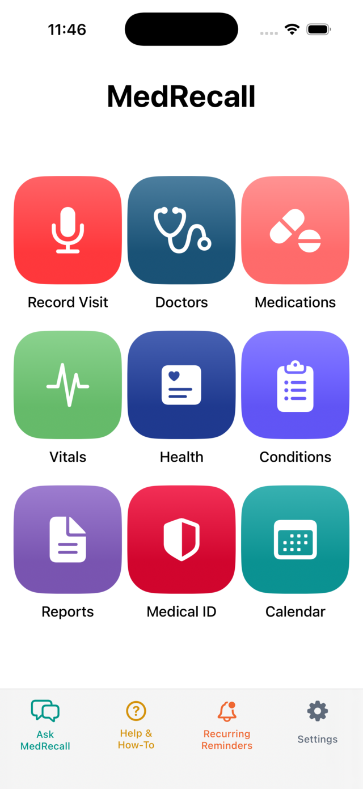
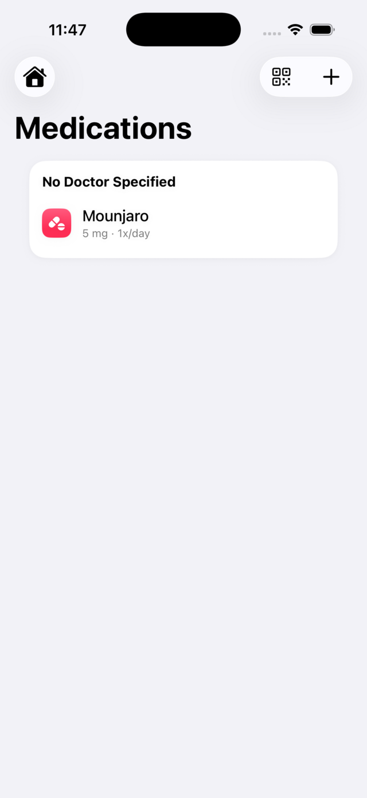
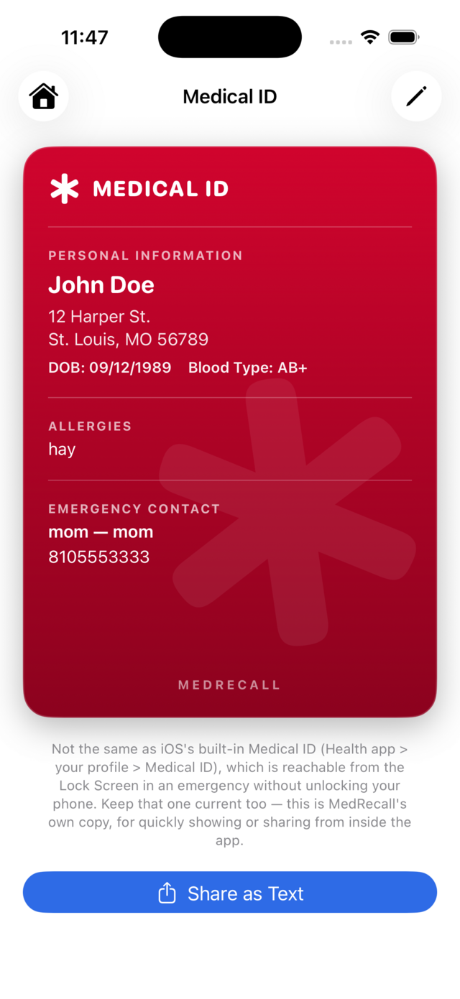

MedRecall tracks your medications, doctors, conditions and vitals, and pulls your Medicare claims straight from CMS Blue Button 2.0 — without ever sending your records to a server. There isn't one.
// on-device storage · Keychain-secured tokens · no account required

The actual Home screen — straight from the TestFlight build
A quick walkthrough of adding a doctor, logging a medication, and pulling up the Medical ID card — all without ever leaving your phone.
Doctors, medications, visit notes and vitals are stored locally on your iPhone — MedRecall has no patient database to secure, and nothing to lose in a breach.
Medicare Blue Button 2.0 sign-in uses PKCE with no client secret stored anywhere, and tokens live in iOS Keychain — the same vault iOS uses for passwords.
Back up to iCloud, Google Drive or OneDrive — or don't. Backups are opt-in and go to storage you already control, never to a MedRecall server.
Built around how a real medical history actually accumulates — across doctors, prescriptions, and years of appointments.
Connect your Medicare account and MedRecall pulls your claims history directly from CMS — no retyping years of visits by hand.
Dosage, schedule and a "mark as taken" log per medication, with recurring reminders tied to the exact prescription.
Every provider in one directory, with appointments, follow-ups and recorded visit notes attached to the right doctor.
Track ongoing conditions alongside blood pressure, weight and other vitals, linked back to the visits that mention them.
Generate a clean PDF by doctor, medication, condition or date range — built for the next appointment or a new provider.
A single emergency card — allergies, conditions and medications — ready to show without unlocking the rest of the app.
An on-device assistant that searches across your doctors, medications and notes to answer plain-language questions.
A flat, five-tab layout instead of the nested menus most patient-portal apps bury you in.


Real screens from the current TestFlight build. Names and details shown are placeholder test data.
MedRecall is in iOS beta now, with Android in development. No account, no server, no ads — just your records, on your phone.